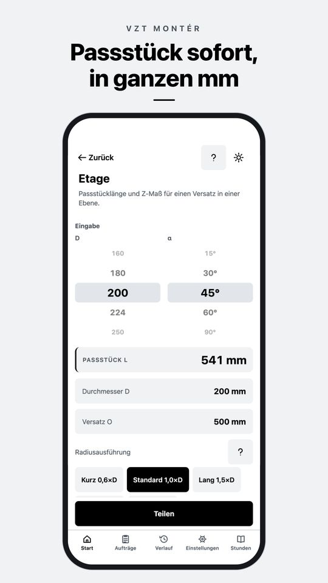
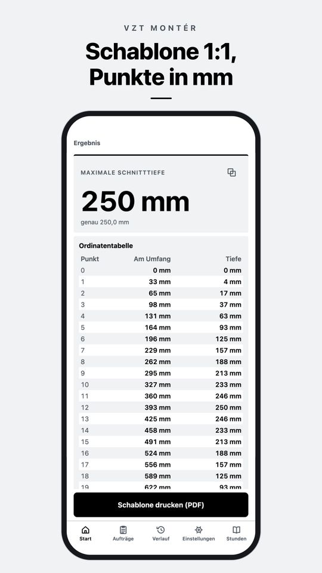
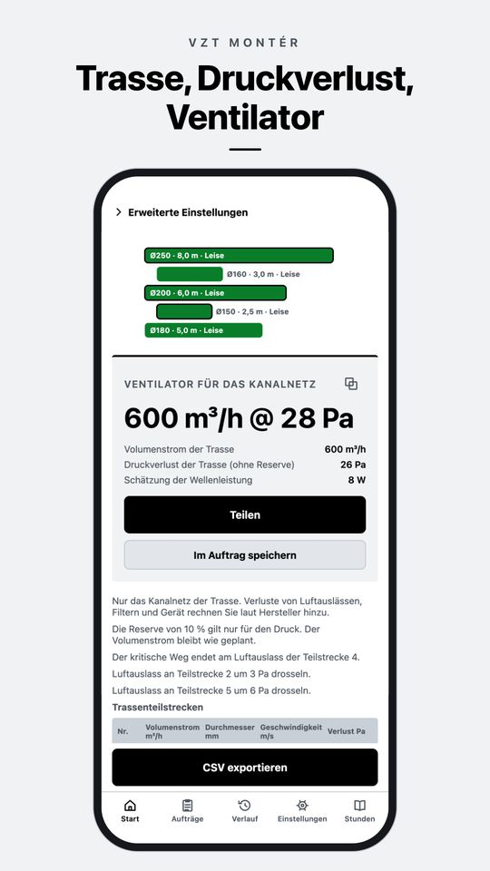
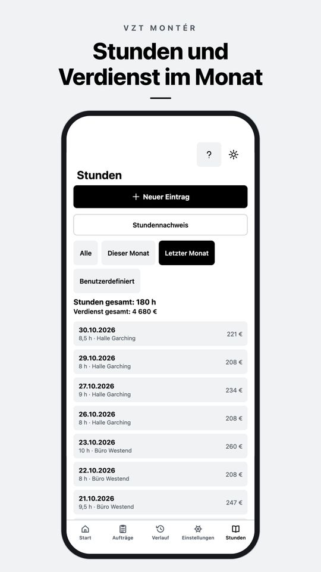

App für iPhone und Android
Etage, Bogenabwicklung und Luftmenge direkt auf der Baustelle berechnen
VZT Montér ist ein Lüftungsrechner für Monteure. Sie geben ein, was Sie mit dem Meterstab gemessen haben, und bekommen die Länge des Passstücks, eine Blechabwicklung als Schablone 1:1 oder den Druckverlust der Trasse. Offline und ohne Konto.
Kostenlos laden. PRO ist ein Einmalkauf, kein Abo.

Lüftungsrechner online
Vier Berechnungen aus der App VZT Montér, kostenlos im Browser und mit denselben Formeln wie in der App. Dezimalzahlen dürfen Sie mit Komma eingeben.
Was VZT Montér kann
Alles läuft auf dem Handy, ohne Internet und ohne Konto. Berechnungen lassen sich im Verlauf oder im Auftrag speichern.
Etagen Kostenlos PRO
Etage am Wickelfalzrohr und am Rechteckkanal für Radiusbögen, Kniestücke und Kniestücke mit Leitblechen sind kostenlos. Räumliche Etage, Etage über Hindernis und eigener Bogenwinkel mit PRO.
Schrägschnitt und Abwicklung PRO
Schrägschnitt, Segmentbogen, Abzweig (Sattel), Übergang rund auf eckig und kegelige Reduzierung. Schnittpunkte als Tabelle in ganzen mm und PDF-Schablone 1:1 auf A4-Blättern mit 100-mm-Kontrollstrecke.
Umrechnungen Kostenlos
Rund auf eckig, Volumenstrom, Geschwindigkeit und Durchmesser, nächstes Maß nach Spiro-Reihe und EN 1505, Raumluftmenge und Ersatzquerschnitt.
Trassenplanung und Druckverlust PRO
Teilstrecken mit Abzweigen, Dimensionierung, Druckverlust, ungünstigster Strang, Drosselung an jedem Luftauslass, Ventilator und Materialliste.
Schnelle Prüfung einer Teilstrecke PRO
Eine Teilstrecke, sofort das Ergebnis: Reibung und Formteile, Ventilator, Taupunkt und Kondensationsrisiko.
Aufträge, Angebot und Stundenzettel Kostenlos PRO
Berechnungen im Auftrag und PDF-Protokoll, Stundenzettel mit Verdienst im Monat. Kostenlos 3 Aufträge und 14 Tage Stundenzettel. Mit PRO unbegrenzt, mit Baustellenfotos, PDF-Stundennachweis und Angebot aus der Preisliste.
Tabellen Kostenlos
Spiro- und Rechteckkanal-Reihen, Verlustbeiwerte, Rauheiten, Bogenradien und empfohlene Geschwindigkeiten.
Für die Baustelle
Der Tagmodus ist schwarzweiß, damit man ihn in der Sonne lesen kann, der Nachtmodus ist für den Technikraum. Große Tasten für Handschuhe. Deutsch, Tschechisch, Slowakisch, Polnisch und Englisch.
So sieht die App aus

Schablone 1:1, Punkte in mm 
Trasse, Druckverlust, Ventilator 
Stunden und Verdienst im Monat
Kostenlos und PRO
Kostenlos
Die Grundlage für jeden Auftrag
- Etage am Rundrohr und am Rechteckkanal
- Umrechnungen und Tabellen
- Verlauf der Berechnungen
- 3 Aufträge
- Stundenzettel für 14 Tage
- Datensicherung in eine Datei
VZT Montér PRO
Einmalkauf
- Räumliche Etage, Etage über Hindernis, eigener Winkel
- Schrägschnitt und Abwicklung mit Schablone 1:1
- Trassenplanung, Druckverluste und Ventilator
- Unbegrenzte Aufträge, Angebot und PDF ohne Wasserzeichen
- Unbegrenzter Stundenzettel, Fotos und PDF-Stundennachweis
Einmal bezahlen, nichts verlängert sich. Den Preis in Ihrer Währung zeigt der Store.
Häufige Fragen
Wie wird das Passstück einer Etage berechnet?
Aus dem Versatz O und dem Bogenwinkel α ergibt sich die Diagonale C = O / sin α. Davon werden zwei Z-Maße der Bögen R · tan(α/2) abgezogen. Beispiel: Ø200 mm, Versatz 500 mm und Bögen 45° mit Standardradius 1,0×D ergeben ein Passstück von 541 mm.
Funktioniert die App ohne Internet?
Ja. Berechnungen, Aufträge und Stundenzettel laufen direkt auf dem Handy. Internet brauchen Sie nur zum Kauf und zum Wiederherstellen von PRO.
Ist PRO ein Abo?
Nein. PRO ist ein Einmalkauf und gilt dauerhaft. Auf einem neuen Handy stellen Sie den Kauf in den Einstellungen wieder her.
Wo sind meine Daten?
Nur auf Ihrem Handy, ein Konto brauchen Sie nicht. Eine Sicherung speichern Sie als Datei, wohin Sie wollen. Details in der Datenschutzerklärung.
Welche Handys und Sprachen?
iPhone und Android-Handys. Die App gibt es auf Deutsch, Tschechisch, Slowakisch, Polnisch und Englisch.
Das Ergebnis passt nicht zur Praxis. Was tun?
Schreiben Sie an info@deriverge.com Ihre Eingaben und das Ergebnis. Wir prüfen die Berechnung. Weitere Antworten finden Sie in der Hilfe.
VZT Montér laden
Kostenlos für iPhone und Android. PRO als Einmalkauf, kein Abo.